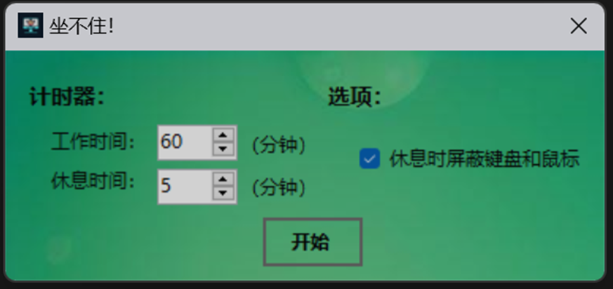
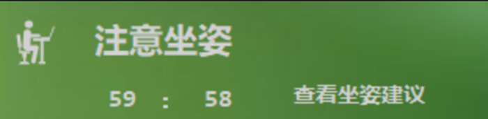
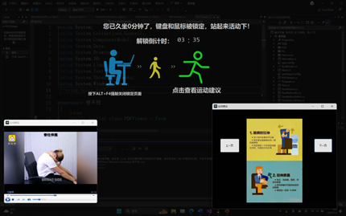
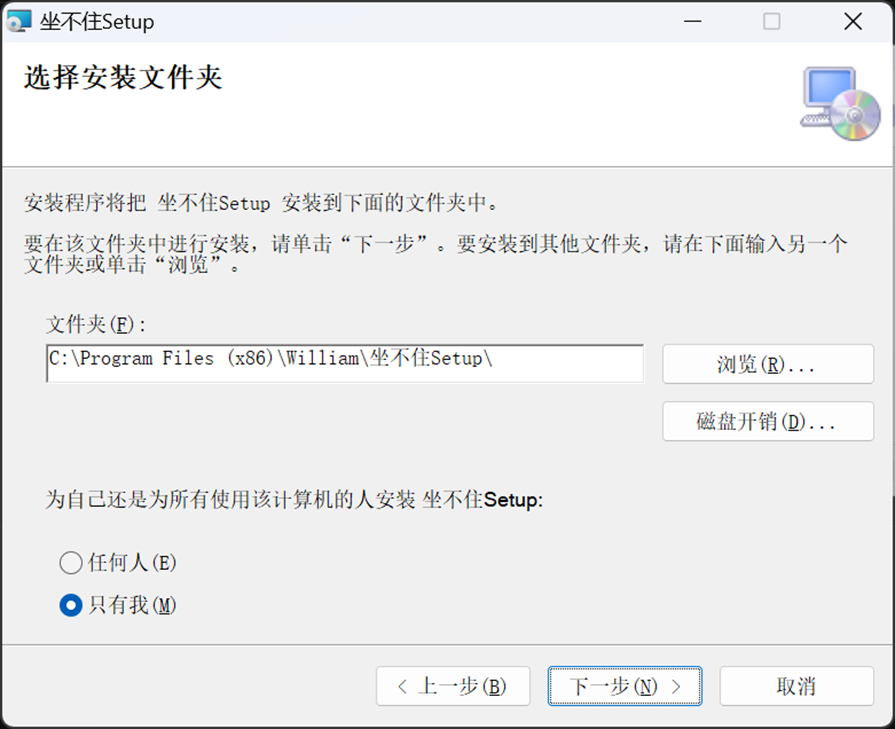

功能介绍
a) 定时提醒：根据使用者的设置，定时提醒使用者休息一下，可以选择屏蔽键鼠的锁屏方式或不屏蔽键鼠的锁屏进行提醒。如果选择屏蔽键鼠的锁屏，则会屏蔽键盘和鼠标，强制使用者停止操作；如果选择不屏蔽键鼠的锁屏，则不会强制使用者停止操作，用户可以继续操作其他软件。
b) 坐姿指导和休息时运动指南：提供了图文并茂的正确坐姿和运动指南，提醒使用者调整一下姿势或者做一些简单的运动。包括正确坐姿建议和办公室运动建议两部分内容。
c) 自定义设置：使用者可以自定义工作时间和休息时间。
d) 简洁界面：界面简洁明了，操作起来非常容易，只有一个主窗口，不会占用过多的屏幕空间和资源。
功能展示



